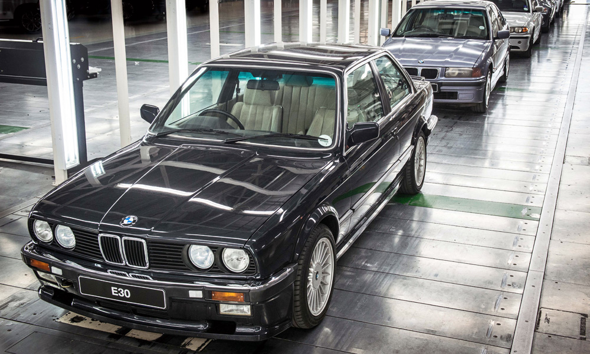
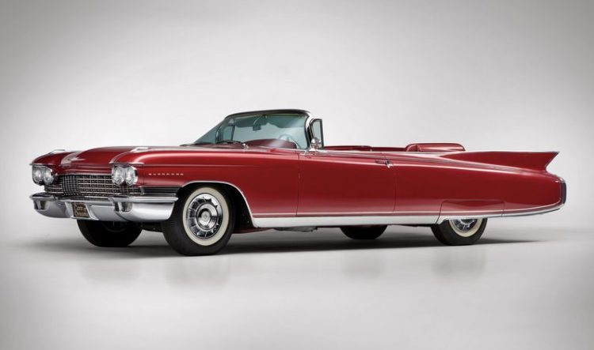
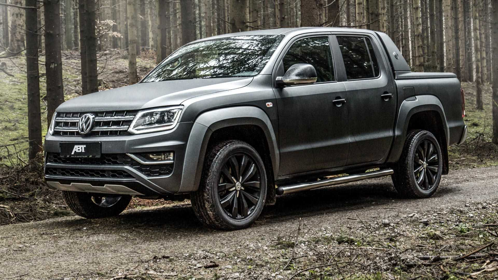

Our goal is to be an industry leader in providing unmatched quality automotive products and services.
We will constantly strive to meet the changing needs of our customers.
It is our mission to exceed our customers' and employees' expectations and maintain their loyalty for a lifetime.
Available Cars
- AC Cars 427 S/C '66
- Acura CL 3.2 Type-S '01
- Acura CL 3.2 Type-S '03
- Alfa Romeo 147 TI 2.0 TWIN SPARK '06
-
Alfa Romeo GTV 3.0 V6 24V '01
-
Audi R8 Race Car (Audi PlayStation Team ORECA) '05
-
BMW M3 GTR Race Car '01
-
Chevrolet Corvette C7 Test Prototype '12

With a fuel consumption of 8.4 litres/100km - 34 mpg UK - 28 mpg US (Average), 0 to 100 km/h (62mph) in 7.0 seconds, a maximum top speed of 152 mph (245 km/h), a curb weight of 3097 lbs (1405 kgs), the E90 3 Series 325i has a naturally-aspirated Inline 6 cylinder engine, Petrol motor.
This engine produces a maximum power of 218 PS (215 bhp - 160 kW) at 6500 rpm and a maximum torque of 250 Nm (184 lb.ft) at 2750-4250 rpm. The power is transmitted to the road by the rear wheel drive (RWD) with a 6 speed Manual gearbox.
On the topic of chassis details responsible for road holding, handling behavior and ride comfort, the E90 3 Series has Independent. McPherson. coil springs. anti-roll bar front suspension and Multilink. Coil springs. anti-roll bar rear suspension. Stock tire sizes are 205 / 55 on 16 inch rims at the front, and 205 / 55 on 16 inch rims at the rear. For stopping power, the E90 3 Series 325i braking system includes Vented Discs at the front and Vented Discs at the rear.
The E90 3 Series model is a Sedan car manufactured by BMW, sold new from year 2005 until 2013, and available after that as a used car.

Cadillac has built some really impressive V8 engines. The magnificent 390 CID V8 cranks 325 hp @ 4,800 rpm with 583 Nm of peak torque @ 3,100 rpm. It is capable of obtaining 14 mpg if properly maintained and driven with the primary barrels. Longitudinal acceleration is rated as: 0-60 mph in 10.6 seconds, 0-100 mpg in 29.2 seconds with a top speed in the 122-125 range. It can do the ¼ mile @ 83 mph in 17.7 seconds. This engine delivers more hp per pound of engine weight than any other luxury car in its class for 1960.

The arrival of the more powerful 3.0 TDI will see the old 165kW version fall away, while the 103kW 2.0 TDI ,
and 132kW 2.0 BiTDI (twin turbo) will soldier on at the lower end of the range.
Not only does the 190kW TDI motor have 25kW more power than its predecessor,
but maximum torque also rises by 30Nm to total 580Nm from 1400 to 2750rpm.
There’s also an overboost function that liberates an extra 10kW during short
spurts of up to 10 seconds, which will come in handy when you’re overtaking.
The 2021 Mercedes-AMG G63 comes with a twin-turbocharged 4.0-liter V-8 engine that makes 577 horsepower and 627 lb-ft of torque.
A nine-speed automatic gearbox with steering-wheel-mounted paddle shifters sends all that power to the all-wheel-drive system (4Matic, in Mercedes marketing lingo).
Low-range gearing (2.93:1 reduction) is standard as are three locking differentials, allowing the G63 to scale steep dirt grades with ridiculous ease.
At our test track, the nearly 5800-pound G63 rocketed from zero to 60 mph in just 3.9 seconds.
Along with its extra power, the G63 has AMG-specific suspension tuning. Ride comfort is vastly improved versus older G-wagens, but given this SUV's towering height and off-road mission, you shouldn't expect much in the way of handling ability.
And there's still quite a bit of wind noise at highway speeds. Properly equipped, the G63 can tow up to 6500 pounds.